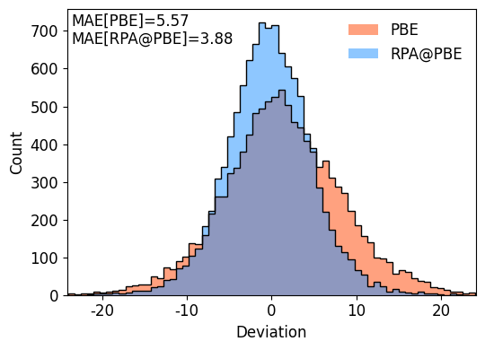
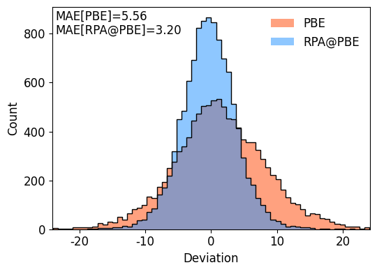
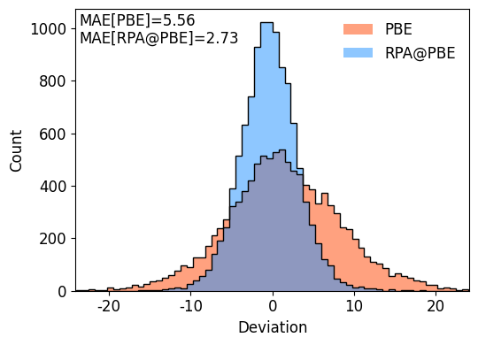
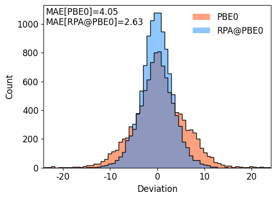
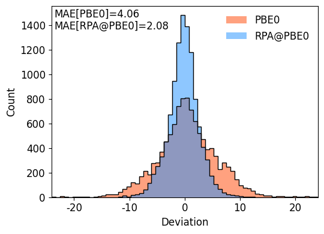
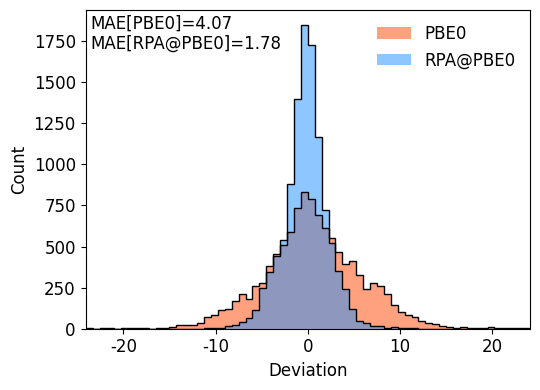

Random Phase Approximation: W4-11RE dataset#
Author: Egor Trushin
Date created: 14/02/2025
Last modified: 14/08/2025
W4-11RE dataset was introduced in:
J.T. Margraf, D.S. Ranasinghe, and R.J. Bartlett. Automatic generation of reaction energy databases from highly accurate atomization energy benchmark sets - Phys. Chem. Chem. Phys. 19, 9798 (2017). https://doi.org/10.1039/C7CP00757D
The presented calculations partially repeat those from
E. Trushin, A. Thierbach, A. Görling. Towards chemical accuracy at low computational cost: Density-functional theory with \(\sigma\)-functionals for the correlation energy - J. Chem. Phys. 154 (2021) 014104. https://doi.org/10.1063/5.0026849
import json
import os
import pyscf
import numpy as np
from pyscf import gto, dft
from pyscf.gw.rpa import RPA
from pyscf.gw.urpa import URPA
from tqdm import tqdm
from sets import W4_11, W4_11RE
import matplotlib.pyplot as plt
from matplotlib import rcParams
rcParams['font.family'] = 'sans-serif'
plt.rcParams['axes.unicode_minus'] = False
import warnings
warnings.filterwarnings('ignore')
if not os.path.exists("json"):
os.makedirs("json")
print("PySCF version:", pyscf.__version__)
PySCF version: 2.10.0
W4-11RE dataset#
def atom_input(charges, xyz):
"""Construct input for mol.atom from charges and xyz."""
atom_input_ = []
for i in range(len(charges)):
atom_input_.append([charges[i], tuple(xyz[i])])
return atom_input_
def calc_one_system(atoms, coords, charge, spin, basis, xc):
"""Perform calculation for given system, basis and xc-functional."""
mol = gto.Mole()
mol.verbose = 0
mol.atom = atom_input(atoms, coords)
mol.basis = basis
mol.charge = charge
mol.spin = spin
mol.build()
if spin == 0:
mf = dft.RKS(mol, xc=xc).density_fit().run()
rpa = RPA(mf)
rpa.kernel(nw=50, x0=2.5)
else:
mf = dft.UKS(mol, xc=xc).density_fit().run()
rpa = URPA(mf)
rpa.kernel(nw=50, x0=2.5)
return float(mf.e_tot), float(rpa.e_tot)
def eval_ds(reactions, etot):
"""Evaluate dataset."""
k = 0
e_calc = np.zeros(len(reactions))
e_ref = np.zeros(len(reactions))
for i, _ in enumerate(reactions):
ec = 0.0
for j in range(len(reactions[i]["stoichiometry"])):
ec += reactions[i]["stoichiometry"][j] * etot[reactions[i]["systems"][j]]
e_calc[k] = ec * 627.50960803059
e_ref[k] = reactions[i]["reference"]
k += 1
mae_all = np.mean(abs(e_calc - e_ref))
return mae_all, e_calc, e_ref
def delete_systems_from_reactions(reactions, systems2remove):
"""Remove all reactions which contains given systems."""
rs = []
for r in reactions:
nottoremove = True
for s in r["systems"]:
if s in systems2remove:
nottoremove = False
if nottoremove:
rs.append(r)
return rs
def plot_dev_histogram(e_rpa, e_dft, e_ref, mae_rpa, mae_dft, xc, max_range):
"""Plot histogram for deviations from reference reaction energies - PBE/PBE0 vs RPA@PBE/RPA@PBE0."""
fig, ax = plt.subplots(1, 1, figsize=(5.5,4))
ydft = e_dft - e_ref
ax.hist(ydft, 64, color='orangered', range=(-max_range, max_range), alpha=0.5, label=f'{xc}')
ax.hist(ydft, 64, histtype = 'step', color='k', lw = 1.0, range=(-max_range, max_range), alpha=1.0)
yrpa = e_rpa - e_ref
ax.hist(yrpa, 64, color='dodgerblue',range=(-max_range, max_range), alpha=0.5, label=f'RPA@{xc}')
ax.hist(yrpa, 64, histtype = 'step', color='k' ,range=(-max_range, max_range), lw = 1.0, alpha=1.0)
ax.set_ylabel('Count', fontsize=12)
ax.set_xlabel('Deviation', fontsize=12)
ax.set_xlim(-max_range-0.1, max_range+0.1)
ax.legend(loc=1,frameon=False, fontsize=12)
plt.text(0.01, 0.94, f"MAE[{xc}]={mae_dft:.2f}", fontsize=12, weight="medium", transform=ax.transAxes)
plt.text(0.01, 0.88, f"MAE[RPA@{xc}]={mae_rpa:.2f}", fontsize=12, weight="medium", transform=ax.transAxes)
plt.tight_layout()
plt.show()
PBE and RPA@PBE#
BASIS_T = {"H": "aug-cc-pVTZ",
"Be": "aug-cc-pVTZ",
"B": "aug-cc-pwCVTZ",
"C": "aug-cc-pwCVTZ",
"N": "aug-cc-pwCVTZ",
"O": "aug-cc-pwCVTZ",
"F": "aug-cc-pwCVTZ",
"Al": "aug-cc-pwCVTZ",
"Si": "aug-cc-pwCVTZ",
"P": "aug-cc-pwCVTZ",
"S": "aug-cc-pwCVTZ",
"Cl": "aug-cc-pwCVTZ"}
reactions = delete_systems_from_reactions(W4_11RE.reactions, ["c2"])
aug-cc-pwCVTZ orbital basis set#
if os.path.isfile("json/W4-11_PBE_T.json"):
print('Reading results from W4-11_PBE_T.json')
with open("json/W4-11_PBE_T.json", 'r') as file_obj:
(etot_pbe, etot_rpa) = json.load(file_obj)
else:
etot_pbe = dict()
etot_rpa = dict()
pbar = tqdm(sorted(W4_11.systems))
for system in pbar:
e_pbe, e_rpa = calc_one_system(W4_11.systems[system]["atoms"],
W4_11.systems[system]["coords"],
W4_11.systems[system]["charge"],
W4_11.systems[system]["spin"],
BASIS_T,
"PBE")
etot_pbe[system] = e_pbe
etot_rpa[system] = e_rpa
with open('json/W4-11_PBE_T.json', 'w', encoding='utf-8') as file_obj:
json.dump((etot_pbe, etot_rpa), file_obj, ensure_ascii=False, indent=4)
Reading results from W4-11_PBE_T.json
mae_pbe, re_pbe, re_ref = eval_ds(reactions, etot_pbe)
mae_rpa, re_rpa, re_ref = eval_ds(reactions, etot_rpa)
plot_dev_histogram(re_rpa, re_pbe, re_ref, mae_rpa, mae_pbe, "PBE", 24)

aug-cc-pwCVQZ orbital basis set#
BASIS_Q = {"H": "aug-cc-pVQZ",
"Be": "aug-cc-pVQZ",
"B": "aug-cc-pwCVQZ",
"C": "aug-cc-pwCVQZ",
"N": "aug-cc-pwCVQZ",
"O": "aug-cc-pwCVQZ",
"F": "aug-cc-pwCVQZ",
"Al": "aug-cc-pwCVQZ",
"Si": "aug-cc-pwCVQZ",
"P": "aug-cc-pwCVQZ",
"S": "aug-cc-pwCVQZ",
"Cl": "aug-cc-pwCVQZ"}
if os.path.isfile("json/W4-11_PBE_Q.json"):
print('Reading results from W4-11_PBE_Q.json')
with open("json/W4-11_PBE_Q.json", 'r') as file_obj:
(etot_pbe, etot_rpa) = json.load(file_obj)
else:
etot_pbe = dict()
etot_rpa = dict()
pbar = tqdm(sorted(W4_11.systems))
for system in pbar:
e_pbe, e_rpa = calc_one_system(W4_11.systems[system]["atoms"],
W4_11.systems[system]["coords"],
W4_11.systems[system]["charge"],
W4_11.systems[system]["spin"],
BASIS_Q,
"PBE")
etot_pbe[system] = e_pbe
etot_rpa[system] = e_rpa
with open('json/W4-11_PBE_Q.json', 'w', encoding='utf-8') as file_obj:
json.dump((etot_pbe, etot_rpa), file_obj, ensure_ascii=False, indent=4)
Reading results from W4-11_PBE_Q.json
mae_pbe, re_pbe, re_ref = eval_ds(reactions, etot_pbe)
mae_rpa, re_rpa, re_ref = eval_ds(reactions, etot_rpa)
plot_dev_histogram(re_rpa, re_pbe, re_ref, mae_rpa, mae_pbe, "PBE", 24)

Complete basis set extrapolation#
def basis_set_extrapolation(e1, e2, n1=3., n2=4):
"""Basis set extrapolation."""
return (e1*n1**3 - e2*n2**3)/(n1**3-n2**3)
with open("json/W4-11_PBE_T.json", 'r') as file_obj:
(etot_pbe_t, etot_rpa_t) = json.load(file_obj)
with open("json/W4-11_PBE_Q.json", 'r') as file_obj:
(etot_pbe_q, etot_rpa_q) = json.load(file_obj)
etot_pbe_cbs = {}
etot_rpa_cbs = {}
for s in etot_rpa_t:
etot_pbe_cbs[s] = basis_set_extrapolation(etot_pbe_t[s], etot_pbe_q[s])
etot_rpa_cbs[s] = basis_set_extrapolation(etot_rpa_t[s], etot_rpa_q[s])
mae_pbe_cbs, re_pbe, re_ref = eval_ds(reactions, etot_pbe_cbs)
mae_rpa_cbs, re_rpa, re_ref = eval_ds(reactions, etot_rpa_cbs)
plot_dev_histogram(re_rpa, re_pbe, re_ref, mae_rpa_cbs, mae_pbe_cbs, "PBE", 24)

PBE0 and RPA@PBE0#
aug-cc-pwCVTZ orbital basis set#
if os.path.isfile("json/W4-11_PBE0_T.json"):
print('Reading results from W4-11_PBE0_T.json')
with open("json/W4-11_PBE0_T.json", 'r') as file_obj:
(etot_pbe0, etot_rpa) = json.load(file_obj)
else:
etot_pbe0 = dict()
etot_rpa = dict()
pbar = tqdm(sorted(W4_11.systems))
for system in pbar:
e_pbe0, e_rpa = calc_one_system(W4_11.systems[system]["atoms"],
W4_11.systems[system]["coords"],
W4_11.systems[system]["charge"],
W4_11.systems[system]["spin"],
BASIS_T,
"PBE0")
etot_pbe0[system] = e_pbe0
etot_rpa[system] = e_rpa
with open('json/W4-11_PBE0_T.json', 'w', encoding='utf-8') as file_obj:
json.dump((etot_pbe0, etot_rpa), file_obj, ensure_ascii=False, indent=4)
Reading results from W4-11_PBE0_T.json
mae_pbe0, re_pbe0, re_ref = eval_ds(reactions, etot_pbe0)
mae_rpa, re_rpa, re_ref = eval_ds(reactions, etot_rpa)
plot_dev_histogram(re_rpa, re_pbe0, re_ref, mae_rpa, mae_pbe0, "PBE0", 24)

aug-cc-pwCVQZ orbital basis set#
if os.path.isfile("json/W4-11_PBE0_Q.json"):
print('Reading results from W4-11_PBE0_Q.json')
with open("json/W4-11_PBE0_Q.json", 'r') as file_obj:
(etot_pbe0, etot_rpa) = json.load(file_obj)
else:
etot_pbe0 = dict()
etot_rpa = dict()
pbar = tqdm(sorted(W4_11.systems))
for system in pbar:
e_pbe0, e_rpa = calc_one_system(W4_11.systems[system]["atoms"],
W4_11.systems[system]["coords"],
W4_11.systems[system]["charge"],
W4_11.systems[system]["spin"],
BASIS_Q,
"PBE0")
etot_pbe0[system] = e_pbe0
etot_rpa[system] = e_rpa
with open('json/W4-11_PBE0_Q.json', 'w', encoding='utf-8') as file_obj:
json.dump((etot_pbe0, etot_rpa), file_obj, ensure_ascii=False, indent=4)
Reading results from W4-11_PBE0_Q.json
mae_pbe0, re_pbe0, re_ref = eval_ds(reactions, etot_pbe0)
mae_rpa, re_rpa, re_ref = eval_ds(reactions, etot_rpa)
plot_dev_histogram(re_rpa, re_pbe0, re_ref, mae_rpa, mae_pbe0, "PBE0", 24)

Complete basis set extrapolation#
with open("json/W4-11_PBE0_T.json", 'r') as file_obj:
(etot_pbe0_t, etot_rpa_t) = json.load(file_obj)
with open("json/W4-11_PBE0_Q.json", 'r') as file_obj:
(etot_pbe0_q, etot_rpa_q) = json.load(file_obj)
etot_pbe0_cbs = {}
etot_rpa_cbs = {}
for s in etot_rpa_t:
etot_pbe0_cbs[s] = basis_set_extrapolation(etot_pbe0_t[s], etot_pbe0_q[s])
etot_rpa_cbs[s] = basis_set_extrapolation(etot_rpa_t[s], etot_rpa_q[s])
mae_pbe0_cbs, re_pbe0, re_ref = eval_ds(reactions, etot_pbe0_cbs)
mae_rpa_cbs, re_rpa, re_ref = eval_ds(reactions, etot_rpa_cbs)
plot_dev_histogram(re_rpa, re_pbe0, re_ref, mae_rpa_cbs, mae_pbe0_cbs, "PBE0", 24)
